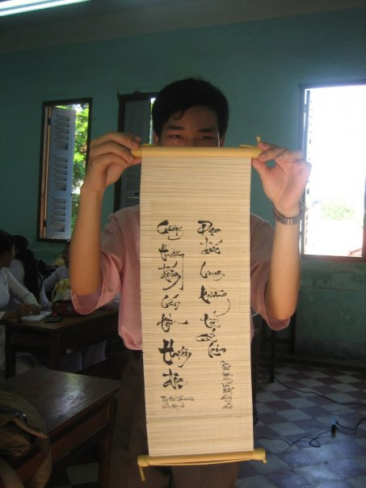

These are my Vietnamese songs, poems, and calligraphy.
|
Tết đến Canada
Tet in Canada |
|
Lyrics: Thuc Dao, 2021
Music: Hanns Eisler, 1949 Tuyết trắng đông hàn gió quét mây ngàn, Bỗng trong lòng mong ngóng xốn xang. Đêm cuối năm tàn quá khứ không màng, Trông trời sáng vận phát an khang. Nắng rạng ngời tỏa lan bốn phương trời, Tiếng người người rộn vang khắp nơi. Tết đến xuân về xúng xính tươi cười, Chúc nhau cùng yên vui thảnh thơi. Mừng năm mới thời tới! |
|
Adapted English lyrics: |
|
Winter winds sweep clouds of white snow, Sudden eager hopes now glow. Let the old and fading year go, Look to bright skies, blessings flow. Sunlight shines across skies so clear, Joyful voices far and near. Spring returns, we dress up and cheer, Wishing peace for all the year. Happy New Year's here! |
|
Please note that the lyrics is not in any traditional Vietnamese poetic form, because I tried to write Vietnamese lyrics on a German tune. The original German song is "Auferstanden aus Ruinen" (English: "Risen from Ruins") and its lyrics has nothing to do with my newly composed lyrics. |
|
In September 2012, my company Officience held a team building event which simulated the London 2012 Summer Olympics.
There was a competition named Poem Marathon with the theme: Vietnamese society in 2050. My poem won the first prize for my hope and vision of Vietnam in economics, culture, education, medicine, people, and as a nation. |
Kỷ hai mốt qua đà nửa bước,
Nhìn lại đây đất nước Việt Nam.
Vài câu thế sự phiếm đàm,
Điểm qua trong giấc mơ màng xa xăm.
Về kinh tế mươi năm vang dội,
Nhật Bản kia còn hỏi tại sao.
Đầu thiên niên kỷ lao đao,
Đến nay vận nước lên cao không ngừng.
Giao thương phát trên từng điện thoại,
In ba chiều muôn loại nên công,
Nghề nông hết khổ ruộng đồng,
Máy chăm cây lúa máy trông bầy đàn.
Về văn hóa lại càng rực rỡ,
Sắc tiên rồng thấy ở năm châu.
Đã thành dấu ấn đậm sâu,
Người đầy nghĩa khí, nước giàu đạo nhân.
Danh vang tiếng xa gần ẩm thực,
Nhạc lan truyền rạo rực thanh văn,
Qua rồi thời đại lăng xăng,
Kim gia cổ chấn nhân văn đến cùng.
Về giáo dục vui mừng phơi phới,
Thực học hành xã hội tiến mau,
Không còn thành tích thấp cao,
Biết bao sự học mang vào đời ta.
Còn tiểu học vang ca tiếng hát,
Đại học rồi tung phát kiến ra.
Học hành không quản cách xa,
Nhà nhà nối mạng học là nghiệp chung.
Còn y tế phúc cùng trăm họ,
Y đức vươn trên bó buộc tiền.
Dù tai bệnh có liên miên,
Lo chi quá tải còn phiền muộn đâu.
Sức khỏe tốt sống lâu hơn trước,
Tám mươi năm thọ được chẳng sai.
Tinh thần thể chất tương lai,
Vui tươi khỏe khoắn dẻo dai vững vàng.
Bờ cõi Việt sang trang sử mới,
Hoàng Sa về với dải đất Nam.
Cùng Trường Sa giữa biển ngàn,
Nước non một mối rỡ ràng tổ tông.
Lòng dân thuận thù trong không có,
Trí, lực, quyền đối phó lân bang.
Dân hân hoan sống rộn ràng,
Số hơn trăm triệu giàu sang an lành.

|
This photo shows my scroll of calligraphy written in July 2007 as a gift to Ms. Hien, my high school literature teacher.
The pair of parallel sentences in my scroll: |
|
Cương thường đống cán tồn thiên địa,
Đạo đức cung tường tự cổ kim. |
| was originally inscribed on the gate to Văn Miếu Quốc Tử Giám - the first Vietnamese university established in 1076 AD. |